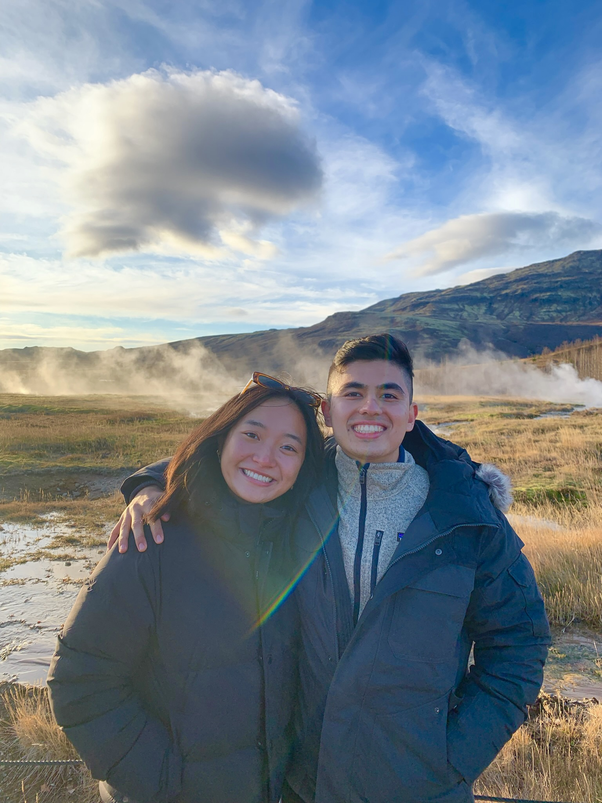
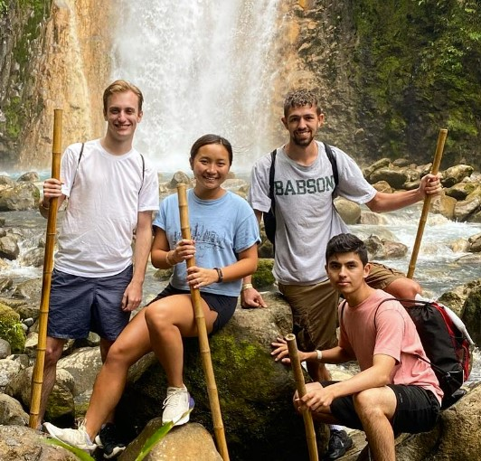

Iris Zhao, from Acton, MA
Acton-Boxborough Regional High School


Iris is my best friend from birth, my sister. Her mom and my mom were
friends when they were pregnant with us back in 2001 - Iris is truly my
rock, my home. We grew up doing everything together, soccer, ballet,
skating, Chinese school, and more. We went through elementary school, middle
school, and high school together; her and I navigated our childhood and teen
years side by side. Now that we are adults, I am so lucky to have her in my
life to now navigate my 20s with her. Having Iris Zhao in my life has been
the greatest gift the universe has ever given me. Doing life with her makes
life seem like a dream, this friendship is a very important one to me.
Watching Iris grow into the person she is today has been an absolutely
beautiful thing to witness. Her and I went from being babies running around
on the soccer field and on the dance stage to Iris dedicating her life and
time to figure skating - winning nationals as a juvenile, training 30 hours
a week, to skating on NYU’s skating team. I look up to Iris and her work
ethic. She never fails to light up a room with her humor, and I quite
literally wouldn’t know what I’d without her.
Dec 2022 What is Iris up to: Iris is currently in Florence, Italy studying abroad, but after graduating in May 2023 she will move to NYC permanently to work at PWC (Price Waterhouse and Coopers). In her home town Acton, Iris was part of the Colonial Figure Skating Club for over 20 years standing as the highest-ranking female juvenile, junior, and senior skater. Now at the New York University, Iris majors in Economics, is a part of the social sorority Alpha Sigma Tau at NYU, and works at the NYU Furman Center.
Hobbies:
- Skating
- Hamilton
- NYC
- A half marathon from time to time
- Watching Scandal once a month
- Shopping
Top 3 memories:
-
HS Senior Summer on the Cape
- Hiking Mount Washington
- Soccer, ballet, skating, sleepovers
Iris's Dreams:
“I want to be happy,
I want to laugh a lot,
And I want to travel.”
ADD PICTURES BELOW